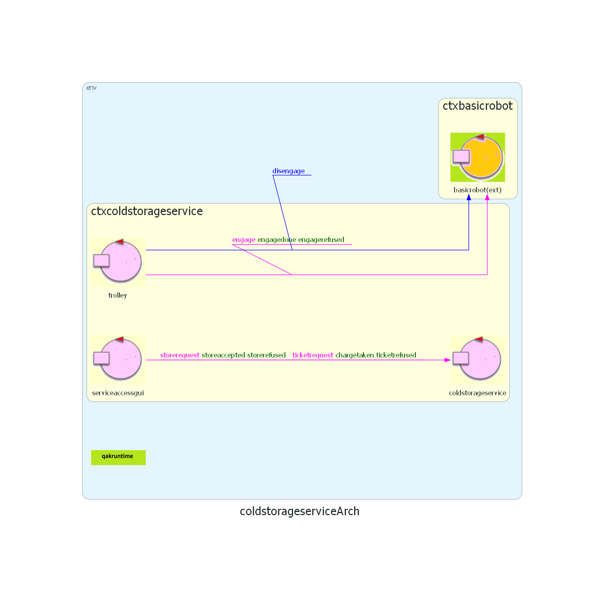

- By Letizia Mancini
- email: letizia.mancini3@studio.unibo.it
- GIT repo: https://github.com/llevtizia/coldstorageservice-iss2023
- matricola: 0000926656

Sprint 0: lo Sprint 0 si occupa dell'analisi dei requisiti del sistema. Si è concluso con la definizione di una prima architettura logica:

Al modello definito nello Sprint 0, lo Sprint 1 aggiunge:
Nello
Come già indicato, il committente offre il servizio BasicRobot23. Tra i componenti:
Dispatch setrobotstate:setpos(X,Y,D) per
allineare la rappresentazione del planner sulla posizione corrente reale del robot
fissata manualmente.
Per costruire dinamicamente una sequenza di mosse con cui il robot può muoversi dalla posizione corrente
r a un’altra posizione (libera) sulla
mappa
consiste nell’utilizzo di un pianificatore come quello fornito dal committente in